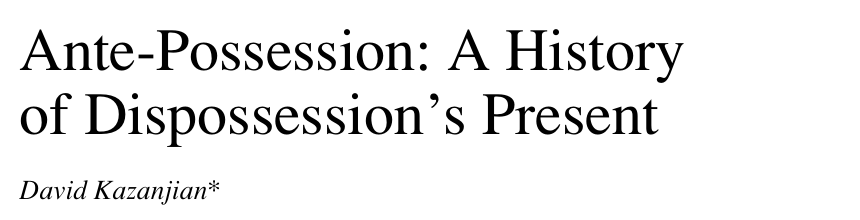
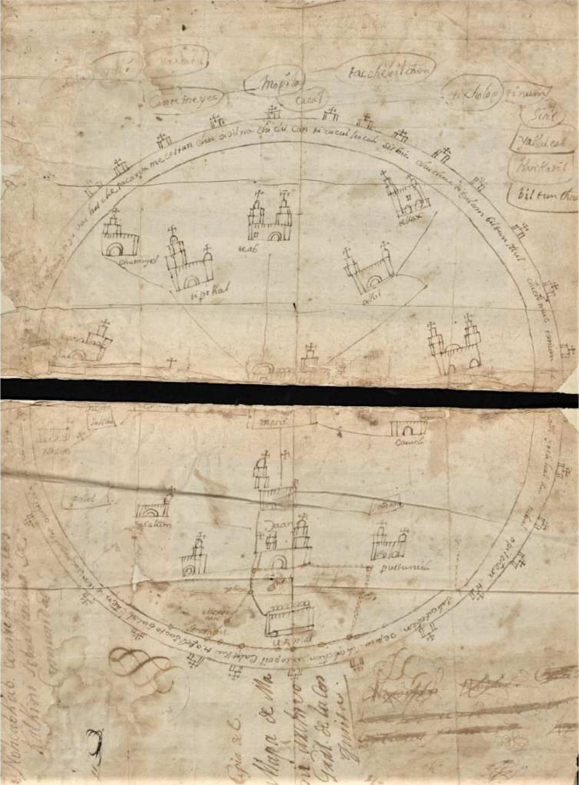

Theory & Method
Understanding Recursive Dispossession

David Kazanjian · American Literary History · 2022. Title-page detail.
Dispossession
| Ya esto no se puede sufrir. From the case of Juan Patricio
The foundationalist presupposition of theories of dispossession operates simultaneously on two levels: on the level of subjectivity, or a subject’s relationship to themself, and on the level of a subject’s relationship to land. In the first instance, subjects are presumed to own themselves, their bodies, or their labor before dispossession, and thus to seek the return of those stolen elements of their selves.
In the second instance, land is presumably possessed by individuals or by collectivities, either by right or custom, as property or as commons, such that anti-dispossessive politics ought to seek the return of that land to the individuals or collectivities from which it was stolen.
However, these presuppositions often do not specify in what sense subjects can be said to have previously owned themselves or their land, and thus fail to consider the political implications of imputing prior possession. As Marx put it in his critique of Pierre-Joseph Proudhon, who called dispossession “theft”:
“‘Theft’ as a forcible violation of property presupposes the existence of property.”
—Karl Marx, “On Proudhon,” letter to J. B. Schweitzer, 1865
The “theft” framework therefore presumes prior possession. It begins with ownership: something already recognized as property is taken, and redress means returning it to its recognized owner. Yet dispossession can also create the property relation it appears merely to violate. Force seizes and reorganizes relations to land, labor, bodies, and shared resources; law then renders the result as ownership. In this way, the theft framework obscures the ante-possessive relations that preceded, resisted, or persisted beside dispossession. It also restricts redress to a dispute over who should be recognized as the proper possessor.
From Theft to Recursive Dispossession
Theft as we know it
- IOwnership already exists
- IIDispossession takes what is already understood as property
- IIIRedress restores ownership
Dispossession produces property
- IRelations to land, labor, and shared resources are not yet organized as property
- IIDispossession seizes and reorganizes those relations
- IIILaw and force render the result as ownership
Once made, ownership appears to have come first.
How might we then understand dispossession as the taking of what was not always previously “possessed”?
The legal cases of Juan Patricio and Adam offer two different views of how possession and dispossession were, and continue to be, apprehended and lived. They unsettle the values we often presumptively assign to both possession and dispossession, including the values we attribute to struggles against dispossession.
Rather than seeking to recover something previously owned, many of the dispossessed challenged domination in other ways. They did not always claim prior possession of their bodies, lands, or labor, nor did they always demand renewed possession as the singular remedy.
Instead, many placed a far greater value on shaping and maintaining social relations, both with other dispossessed people and with the dispossessors they confronted daily, than on gaining or regaining possessions such as land, labor, or even their own bodies.
The cases of Adam and Juan Patricio reveal forms of resistance grounded not in recovering possessions but in preserving, remaking, and defending social worlds. Ante-possession names these relations to land, labor, bodies, and shared life. Such relations may exist before ownership, resist its demands, or continue beside it in forms that possession has not fully contained. Ante-possession is therefore not simply a historical period before property. It names ways of living before, against, and apposite to ownership.
Ante-Possession: Relations to Ownership
Before ownership
Relations to land, labor, bodies, and shared life exist before they are organized as property.
Against ownership
People resist attempts to possess them or to reduce land, labor, and common resources to property.
Apposite to ownership
Other relations persist beside possession, using and remaking its structures without accepting ownership as the only form of value.
Trans-Atlantic Slave Trade
Less than two centuries ago, the idea of shipping human beings across the Atlantic was as ordinary as the trade of textiles or coffee. From 1501 through 1867, the trans-Atlantic slave trade forced an estimated 12.5 million African captives aboard slave ships; about 10.7 million survived the Middle Passage to disembark.
As one of the most significant points of contact between Europe and Africa, the trade expanded steadily throughout the seventeenth century. With the growth of plantation economies in the Caribbean and Chesapeake, demand for enslaved labor increased dramatically. Nearly half of all estimated embarkations occurred during the eighteenth century.
The journey itself, known as the Middle Passage, was brutal and inhumane. Lasting from several weeks to several months, enslaved Africans were packed tightly below deck where they endured sexual violence, disease, suffocating heat, starvation, and extremely low oxygen levels.
During the infamous Zong Massacre, Captain Luke Collingwood ordered more than 130 enslaved Africans thrown overboard, later filing an insurance claim for the value of the murdered captives.
These atrocities did not begin in the Atlantic itself. Dispossession occurred at multiple stages. African captives were often seized by African traders before being sold in exchange for luxury goods, firearms, liquor, cowrie shells, and textiles. European merchants then transported them across the Atlantic, where colonial economies transformed enslaved labor into immense wealth.
The trans-Atlantic slave trade was therefore not a one-step mechanism. It involved the dispossession of African men, women, and children at multiple levels: capture and sale, forced transportation, and exploitation throughout the Americas. Capture made people available to be reorganized as property; property generated capital; and accumulated wealth financed expansion and further capture. Each stage produced the conditions for the next.
Recursive Dispossession: How the Cycle Expands
- I
Capture
People, land, or shared resources are seized.
- II
Propertization
Law and force reorganize what was seized as ownable property.
- III
Capitalization
Property is made to produce labor, revenue, credit, or wealth.
- IV
Expansion
Accumulated wealth funds new seizure and enlarges the possessive order.
Back to capture, on a larger scale
This system formed part of the material world surrounding both cases, although it operated differently in Yucatán and New England. It shaped Juan Patricio’s enslavement as well as the racial infrastructure within which Adam’s claims to freedom and collective obligation were negotiated.
Cartography
Cartography provides an opportunity to understand how people in the seventeenth century envisioned space. By examining the maps they created, we gain insight not only into geography, but also into the ways societies understood relationships between people, places, and power.
For instance, while Spanish cartographers emphasized charting abstract and physical terrain, Maya mapmakers often represented places through symbols that resembled what each structure looked like in everyday life. Their maps prioritized relational space, depicting the human interactions and social connections occurring within each location rather than simply recording physical boundaries.
These contrasting approaches also reflected the different purposes that maps served. Spanish settlers frequently used cartography to present an image of territory that could exist independently of its Indigenous inhabitants, whereas Maya cartography centered on human identification and lived relationships with the land.
The Maní Land Treaty Map makes this distinction visible. Its churches, settlements, routes, named communities, and orientation are arranged through their relations to one another rather than as empty coordinates inside fixed boundaries.
The Maní Land Treaty Map (1557): Space as Relation

A similar tension shaped colonial New England. Indigenous geographies of the Northeast were organized through waterways, village territories, and networks of relation. Colonial maps obscured many of these relationships by presenting towns, roads, boundaries, and commons as settled territorial facts.
In Adam’s case, colonial infrastructure made those possessive spatial claims material. In 1708, Boston ordered a road between Boston Common and Beacon Hill to be maintained in part through compelled labor from free Black men, including Adam Saffin. The road linked a settler commons built on appropriated Native land to a racialized system of Black labor. It brought Black and Indigenous dispossession into the same colonial spatial order.
Cartography is therefore not simply descriptive. Maps participate in making space: they can naturalize a possessive order or make other spatial relations visible.
Implications for the Past and the Present
Juan Patricio: Relations beyond ownership
Throughout his conflict, Juan Patricio appears less interested in gaining or regaining possessions than in shaping his relations with Black and Indigenous people, Creoles, and Spaniards.
Juan Patricio’s challenge to dispossession is thus ante-possessive, in that it is at once before, against, and apposite to possession itself.
Before possession, because he acted in a world not yet fully organized by racial capitalism; against possession, because he opposed attempts to possess him and Fabiana Pech; and apposite to possession, because he continued to shape relations among Afro-Yucatecans, Maya, and Creoles even while colonial accumulation remained powerful.
Adam: Collective care within possessive infrastructure
Adam’s case reveals the same framework in a different setting. In 1708, Boston compelled free Black men, including Adam, to maintain a road connecting Boston Common and Beacon Hill. In 1714, Adam Saffin, Dick, Ned Hubbard, Robin Keats, and Mingo Walker offered to assume responsibility for Madam Leblond so that sickness or disaster would not make her a charge to the town. Municipal authorities rejected the proposal, but the effort redirected obligation away from the town’s extraction of Black labor and toward Black collective care.
Their proposal formed an ante-commons: not a pure commons or its opposite, but an effort to foster collective life within infrastructure already structured by Native land appropriation, Black labor, and colonial accumulation. Adam’s case therefore shifts attention from freedom as something an individual possesses to the relations people remade within and against racial infrastructure.
Juan Patricio’s case centers the maintenance of relations against colonial ownership; Adam’s centers the redirection of imposed obligations toward collective care. Neither simply restores a prior possession. Together, they show social worlds being remade within and against possessive orders.
From the cases to the present
More than three centuries later, these cases help us recognize accumulation by dispossession as an ongoing process in the Americas.
For instance, public discourse about migration to the United States continues to describe a system of accumulation by dispossession in individualistic terms. Individuals from Central America and Mexico are presumed to migrate, first, because they lost possession over something they previously owned, such as their labor, their land, their autonomy, or their safety, and second, because they want to regain the possessions they lost.
This no doubt can be said to be true for some people, yet at least some migrants seem to have migrated for other reasons and seem to want something entirely different from such possessions. Migration itself, including the often maligned “caravans” of migrants moving from Central America to the United States, can be understood as a kind of improvised community: an effort to configure new social relations in the face of threats to, or the destruction of, prior social relations.
Learning how contemporary migrants come to the United States in the interest of and with the desire to protect, restore, or forge new social relations that have been stressed or even destroyed by the relentless logics of dispossession, and then are required to narrate those interests and desires as lost individual possessions, can teach us how to approach dispossession for traces of ante-possession.
From seventeenth-century villages like Tahmek to twenty-first-century detention centers in El Paso, varied, vigorous challenges to accumulation by dispossession thrive, refusing possession itself in the name of lives otherwise lived.
Key Terms
Theory & Method
Hover or focus for a definition.